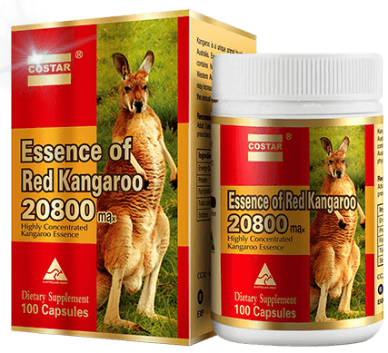

Phải làm gì khi chồng bị yếu sinh lý? Yếu Sinh Lí Có Điều Trị Được Hết Không?
07 / 06 / 2018
Mai Anh (27 tuổi) chuyên viên tại một ngân hàng lớn tại Hà Nội ngày nào đến cơ quan cũng ủ rũ mặt mày. Số là vợ chồng chị lấy nhau được khá lâu nhưng chưa khi nào chuyện chăn gối làm chị cảm thấy mãn nguyện. Chồng chị yếu sinh lý nên mỗi lần gần gũi chồng thì chị phải "kích thích" rất lâu "cậu nhỏ" mới cứng được một chút. Mà Cứng rồi nếu không nhanh thì "nó" lại xỉu ngay lập tức. Hầu như lần nào chị chưa cảm nhận được sự tồn tại của "cậu nhỏ" trong người mình thì chồng chị đã "về đích".
Phải làm gì khi chồng bị yếu sinh lý bây giờ?
Đây là một trong số rất nhiều câu chuyện của chị em khi chồng bị yếu sinh lý. Dẫu biết rằng chồng yếu sinh lý là việc mà không một người vợ nào muốn. Tuy nhiên nếu gặp phải trường hợp này các chị em nên bình tĩnh. Để người chồng hiểu hơn về sự "mong muốn" và bứt rứt không thoải mái mỗi khi vợ chồng quan hệ, người vợ là người nên chủ động tâm sự những tâm tư của mình. Bởi quá trình đó là một chu trình, trong đó yếu tố tâm lý đóng vai trò quan trọng. Người vợ không thỏa mãn lâu dần sẽ tạo tâm lý không tốt, có người còn trầm cảm và lãnh cảm với chuyện gối chăn.
Làm gì khi chồng yếu sinh lý? Về phía người chồng, nếu bị yếu sinh lý nên điều hòa được áp lực công việc và cuộc sống. Phải có chế độ tập luyện và dinh dưỡng hợp lý. Nếu dùng thuốc hỗ trợ kích thích sinh lý thì phải dùng theo đúng chỉ định của bác sĩ. Tuyệt đối không nên dùng thuốc điều trị / hỗ trợ khi không có chỉ định của bác sĩ chuyên khoa. Nên lắng nghe những thổ lộ của người vợ để từ đó xây dựng được cuộc sống vợ chồng bền lâu.
Xem thêm: Thành tựu tuyệt vời nhất của khoa học đã xuất hiện để trị dứt điểm tình trạng yếu sinh lý!Yếu sinh lý ở nam giới là gì?
Đây là câu hỏi nhiều nam giới hiện nay. Yếu sinh lý là một bệnh lý sinh học khá phổ biến trên thế giới làm cho nam giới cảm thấy lo lắng, thiếu tự tin trong quan hệ vợ chồng cũng như trong giao tiếp xã hội. Nếu không điều trị đúng giờ và kịp thời có thể gây ra nhiều hậu quả tai hại. Chính vì thế cần tìm hiểu rõ hơn về căn bệnh yếu sinh lý nam này để có biện pháp khắc phục
“Yếu sinh lý ở nam giới có biểu hiện gì?”
Yếu sinh lý có thể hiểu là nam giới các hiện tượng suy giảm về nhu cầu sinh lý, ít ham muốn hơn hoặc vẫn còn ham muốn nhưng khả năng quan hệ tình dục bị hạn chế. Yếu sinh lý làm cho dương vật của phái mạnh khó cương cứng mặc dù đã "được" kích thích, do đó không thể tiến hành giao hợp, hoặc dương vật có thể cương cứng nhưng không kéo dài được lâu.
Chính vì thế nếu người đàn ông nào mắc phải căn bệnh này sẽ vô cùng khó chịu và làm cho vợ, bạn gái thất vọng không hài lòng, vì họ không được thỏa mãn về chuyện ấy. Từ đó ảnh hưởng đến tình cảm hạnh phúc gia đình. Không những thế nếu bệnh yếu sinh lý nam kéo dài sẽ biến chứng đến nhiều bệnh khác mà không ai mong muốn. do tình trạng không thể cương cứng thường xuyên nên lâu ngày làm mất cảm giác gây ra liệt dương mất khả năng quan hệ hoàn toàn.
Triệu chứng yếu sinh lý ở nam giới
Các triệu chứng cho nam giới bị yếu sinh lý bao gồm:
- Suy giảm ham muốn tình dục, không có cảm giác và nhu cầu trong chuyện quan hệ cợ chồng.
- Rối loạn khả năng cương dương, dương vật mất khả năng cương cứng hoặc có cương cứng nhưng tình trạng rất nhanh và chớp nhoáng, trong thời gian ngắn sau đó lại không thể cương cứng được.
- Có hiện tượng rụng tóc, ngủ ngáy, xuất hiện nếp nhăn trên dái tay.
- Vòng eo có độ lớn hơn 100cm do những người này đều đang mắc bệnh về tiểu đường, tim mạch, gan, thận, … có thể các căn bện này đẫn đến yếu sinh lý.
- Giọng nói có độ trầm tương đương với lượng tinh trùng ít và yếu sinh lý ở nam giới.
- Không thỏa mãn trong quan hệ tình dục dù đã xuất tinh nhưng không đạt được khoái cảm mong muốn.
- Có cảm giác đau nhức khi cương dương và khi quan hệ tình dục là khi xuất tinh hay đi tiểu.
- Rối loạn xuất hiện biểu hiện xuất tinh sớm hoặc xuất tinh ngược.
Nguyên nhân gây nên tình trạng yếu sinh lý nam giới cần biết
- Buồn phiền: Những cảm xúc âm tính như: lo sợ quá mức, gia đình lục đục, công danh trắc trở, bất mãn với cuộc sống… dễ dẫn đến mất ngủ, rối loạn tâm-sinh lý và tình trạng yếu sinh lý là điều đương nhiên.
- Do bệnh tật: Một số người bị bệnh tim mạch, huyết áp, đái tháo đường, béo phì, bệnh cột sống... cũng bị yếu sinh lý. Các loại thuốc điều trị huyết áp, thuốc an thần cũng ảnh hưởng đến việc cương dương.
- Tuổi tác: tuổi càng cao, số người bị yếu sinh lí càng lớn nguyên do khi tuổi cao, nội tiết tố kích dục testosteron giảm dẫn đến việc giảm ham muốn tình dục của nam giới.
- Uống quá nhiều rượu và thuốc lá cũng là nguyên nhân khiến nam giới bị yếu sinh lí.
Làm gì khi chồng / bạn trai yếu sinh lý?
- Tìm rõ nguyên nhân gây nên bệnh yếu sinh lý, xem mức độ yếu sinh lí của chồng như thế nào như vậy sẽ có những cách thích hợp để điều trị.
- Bổ sung chế độ ăn uống với những thực phẩm giúp chồng " mạnh " hơn. Bên cạnh đó hình thành cho chồng lối sống lành mạnh, nghỉ ngơi hợp lí.
- Động viên khuyến khích các chàng tập luyện thể dục thể thao thường xuyên.
- Hạn chế quan hệ tình dục một tuần chỉ 1 đến 2 lần để gìn giữ tinh khí cho chồng.
- Khi quan hệ tình dục người vợ nên tránh to tiếng, tránh uốn éo người vì làm như vậy người chồng dễ bị xuất tinh hơn.
- Chọn tư thế quan hệ tình dục hợp lí để người chồng lâu xuất tinh.
- Đến các phòng khám nam khoa để được nghe tư vấn và hỗ trợ.
- Kết hợp với sản phẩm chăm sóc sức khỏe tình dục hỗ trợ tăng cường sinh lý khi chồngng yeu sinh lý.

“Luyện tập thể dục thể thao để có sức khỏe tốt”
Chồng yếu sinh lý vợ phải làm sao?
Phải làm sao khi chồng yếu sinh lý? Theo như các chuyên gia người vợ có vai trò đặc biệt quan trọng trong việc cải thiện tình trạng yếu sinh lý ở nam giới. Chính vì vậy sự thông cảm và thấu hiểu và quan tâm của bà xã sẽ giúp cho các ông chồng cảm thấy được chia sẻ chia và hỗ trợ điều trị sinh lý được tốt hơn. Ngoài ra người vợ cũng nên thực hiện những lời khuyên sau đây nhé.
Trước tiên người vợ cần tìm hiểu xem nguyên nhân chồng yếu sinh lý xuất phát từ đâu? Do tuổi tác, do ăn uống không lành mạnh, chế độ sinh hoạt không khoa học hay chỉ đơn giản do chồng đang gặp phải áp lực công việc, mẫu thuẫn cá nhân … Nếu nam giới bị yếu sinh lý do 1 trong các yếu tố này chị em chỉ cần giúp chồng bạn tránh xa các yếu tố là được. Các bạn nên chú ý đến các thực phẩm tốt cho sức khỏe nam giới và giúp chồng bạn có 1 tâm lý thoải mái, vui vẻ…
“Vợ nên động viên khi thấy chồng bị yếu sinh lý”
Nếu chồng bị yếu sinh lý không phải do các yếu tố trên thì rất có thể chồng của bạn đã bị mắc phải trong các bệnh lý về bao quy đầu, bệnh ly tinh hoàn, tuyến tiền liệt, tiểu đường, tim mạch… các bệnh lý này đều có thể gây yếu sinh lý ở nam giới nếu phát hiện và điều trị chậm trễ. Để biết chính xác chồng các bạn mắc phải bệnh lý nào và để chữa bệnh triệt để bạn cần lựa lời khuyên chồng bạn đến các cơ sở y tế chuyên khoa có uy tín để kiểm tra tình trạng sức khỏe. Chị em cũng cần lưu ý là nam giới rất ưa thể diện nên chị em hãy lựa lời khuyên chồng của các bạn. Rất nhiều trường hợp nam giới bị yếu sinh lý nhưng vì xấu hổ hơn nữa sợ bị “mất mặt” hoặc sợ vợ chán vì chồng yếu sinh lý nên đã âm thầm tự tìm cách chữa bệnh. Kết quả là bệnh không khỏi và có dấu hiệu quá trầm trọng mới tá hỏa đi thăm khám.
Xem thêm: Gợi ý cho các quý ông sản phẩm giúp cải thiện tuyệt đối tình trạng nàyNên làm gì khi chồng bị yếu sinh lý? Hãy thông cảm với anh ấy
- Khi phát hiện ra ra chồng bị yếu sinh lý. Không nên miệt thị hay mỉa mai chồng để tránh bị động chạm đến lòng tự trọng của người đàn ông. Hãy động viên và khích lệ của người chồng rằng đây là một chuyện rất bình thường và phổ biến ở nam giới, có thể được khắc phục dễ dàng nên bạn đừng quá lo lắng. Những lời động viên của vợ chính là những liều thuốc vực dậy tinh thần cho các ông chồng một cách hiệu quả
Nếu chồng bị yếu sinh lý chú ý đến chế độ dinh dưỡng của chồng
- Bổ sung thêm vào thực đơn cho chồng những thực phẩm có tác dụng làm tăng cường sinh lý giúp chồng cải thiện được sinh lý. Tùy theo thể trạng và tuổi tác mà có thể sử dụng sao cho nó được phù hợp. Tốt nhất bạn nên tha khảo ý kiến của các bác sĩ xem chồng cần bổ sung thức ăn gì để chống xuất tinh sớm
Phải làm gì khi chồng yếu sinh lý- Cùng chồng đến phòng khám chuyên khoa để điều trị
- Với sự hỗ trợ từ các chuyên gia, bác sĩ chuyên khoa sẽ giúp bạn tìm ra nguyên nhân gây yếu sinh lý ở nam giới và có những hướng điều trị hợp lý. Tùy theo những nguyên nhân mà bác sĩ có cách điều trị kịp thời, và tư vấn những thức ăn phù hợp
Làm gì khi chồng bị yếu sinh lý là thay đổi tư thế quan hệ
- Vợ chồng nên thử những tư thế quan hệ để tạo nên sự mới lạ, giúp kích thích làm tăng ham muốn tình dục. Bên cạnh đó vợ chồng cũng nên hạn chế quan hệ tình dục một cách liên tục mà chỉ nên duy trì 1 đến 2 lần/ tuần. Trong quan hệ vợ chồng nên lựa chọn tư thế sao cho nó được phù hợp để cho người chồng lâu xuất tinh.
Khuyên chồng tập thể dục thể thao để tránh tình trạng bị yếu sinh lý
- Người vợ nên khuyên và động viên chồng nên luyện tập thể dục thể thao thường xuyên để nang cao sức khỏe và năng lực. Đặc biệt các quý ông nên thực hiện các bài tập chữa xuất tinh tại nhà hay bài tập cơ để làm tăng cường sức mạnh dương vật, hạn chế những tình trạng xuất tinh sớm.
Làm gì khi chồng bị yếu sinh lý - Không nên tự ý sử dụng thuốc
- Người vợ tránh tự ý mua thuốc (đặc biệt là những loại thuốc kích dục không rõ nguồn gốc xuất xứt) cho chồng uống vì có thể khiến cho tình trạng yếu sinh lý ở người chồng bị tệ hại hơn. Ngoài ra nam giới nê tránh xa những chất gây kích thích như rượu, bia, thuốc lá. Hãy tham khảo ý kiến bác sĩ trước khi sử dụng các loại thuốc
- Ngoài ra việc ủng hộ từ phía người vợ cũng rất quan trọng. Nhiều chị em thấy chồng bị yếu sinh lý tỏ ra khó chịu, coi thường, mỉa mai… từ đó khiến tình trạng bệnh người chồng càng trở lên trầm trọng hơn. Không làm tròn “bổn phận” của 1 người đàn ông điều này đã làm người rất xấu hổ, tự ti, căng thẳng… vì vậy sự thông cảm và chia sẻ từ phía người vợ là 1 điều vô cùng quý giá để giúp người chồng vượt qua “căn bệnh khó nói” này.
“Chồng yếu sinh lý vợ phải làm thế nào? ”
Xem thêm: Tinh chất từ thịt Kangaroo - thần dược dành cho quý ông yếu sinh lýYếu sinh lý nên dùng thực phẩm gì?
Cách chữa yếu sinh lý nam giới bằng gừng
Được biết đến là một trong những loại gia vị quen thuộc trong bữa ăn hàng ngày, bên cạnh đó gừng còn có tác dụng rất tốt trong việc làm đẹp, chăm sóc sức khỏe và làm cải thiện sinh lý nam giới.
“Ăn gừng tươi là một cách hữu hiệu để cải thiện phần nào triệu chứng yếu sinh lý ở nam giới”
Trong gừng chứa các chất zingiberene, shogaol, gingerol… giúp làm giãn nở các co thắt mạch máu giúp cho việc tăng cường sinh lý nam giới. Những chất này có tác dụng làm kích thích máu. Làm tăng cường tuần hoàn máu. Chính vì thế gừng được xem như một thực phẩm làm kích thích tình dục, chữa bệnh yếu sinh lý, rối loạn cương dương.
Xem thêm: Sản phẩm bổ thận tăng cường sinh lý nam được ưa chuộng nhấtMột số cách chế biến từ gừng để chữa yếu sinh lý cho nam giới
- Uống nước gừng tươi: Bạn lấy gừng tươi rửa sạch sau đó cạo vỏ và ép lấy nước cốt gừng uống. Bạn đem trộn nước cốt gừng cùng với mật ong sẽ tạo thành hỗn hợp mật ong gừng. Có thể sử dụng hỗn hợp này uống 3 lần/ ngày, liên tục như thế trong vòng 2 đến 3 tháng sẽ thấy được hiệu quả rõ rệt
- Dùng nước gừng pha với mật ong và trộn đều với nửa quả trứng luộc cũng hỗ trợ chữa yếu sinh lý và xuất tinh được sớm.
- Bạn nên hình thành thói quen uống nước gừng mỗi ngày, đặc biệt là trong mùa đông, nước gừng vừa giúp cho bạn có thể giữ ấm được cơ thể, vừa tránh được bệnh cảm lạnh và lưu thông máu, lưu thông khí huyết và vừa hỗ trợ yếu sinh lý rất tốt
- Trong bữa ăn nên chế biến các món ă với gừng vừa để làm tăng thêm hương vị, vừa để làm cải thiện sức khỏe sinh lý
- Trong ngành đông y gừng được dùng để làm các loại thảo dược trong chấm cứu lưu thông khí huyết làm giãn nở các mạch máu
Chữa yếu sinh lý của nam giới bằng tâm sinh lý
Nam giới phải rèn luyện được thói quen sinh hoạt hợp lý để có thể tốt cho sức khỏe. Với một sức khỏe tốt và đầu óc được thoải mái sẽ giúp cho nam giới có đủ được tự tin mỗi khi giao hợp.
Nên ăn uống đầy đủ các chất dinh dưỡng đặc biệt là giá đỗ và hành củ, những chất có chứa nhiều chất vitamin E để giúp cho dương vật được cương cứng hơn.
Thường xuyên luyên tập thể dục thể thao giúp cho cơ thể được khỏe mạnh, vừa giải tỏa được những căng thẳng thần kinh để nam giới có thể tự tin mỗi ngày khi giao hợp.
“Người vợ không nên trách móc khiến tâm lý người chồng căng thẳng”
Chế độ làm việc hợp lý, nghỉ ngơi, ngủ đủ giấc, không nên làm việc quá sức.
Tuyệt đối không nên sử dụng các chất kích thích như rượu, bia, thuốc lá vì chúng có thể làm giảm ham muốn tình dục, gây nên những triệu chứng xuất tinh sớm.
Cuộc sống gia đình hãy luôn tạo được không khí vui vẻ, vợ chồng hòa thuận. Nếu anh xã gặp các vấn đề sinh lý hoặc các vấn đề về khả năng tình dục thì nên thoải mái tâm sự với vợ để tìm ra hướng khắc phục tốt nhất.
Trường hợp yếu sinh lý do bệnh tật thì cần phải điều trị dứt điểm sử dụng các loại thuốc hỗ trợ để giúp cho nam giới được tăng cường sinh lực.
Muốn điều trị yếu sinh lý đòi hỏi nam giới phải có sự kiên trì, đặc biệt phải được sự ủng hộ từ phía bạn đời.
Essence of Red Kangaroo - Sản phẩm giúp hỗ trợ điều trị yếu sinh lý ở nam giới hiệu quả nhất.
Essence Of Kangaroo là viên uống hỗ trợ tăng cường sinh lý nam của COSTAR – thương hiệu số 1 tại Úc. Nó cung cấp các chất khoáng thiết yếu cho việc phụ hồi và làm tăng testosterone trong cơ thể nam giới, từ đó giúp ngăn ngừa các triệu chứng suy nhược, căng thẳng, mệt mỏi do yếu sinh lý gây ra …
Hơn nữa, Viên uống Essence Of Kangaroo còn rất hiệu quả trong hỗ trợ điều trị các bệnh sinh dục nam như: liệt dương, xuất tinh sớm, rối loạn cương dương,…

Essence of Red Kangaroo được sản xuất tại Úc bởi công ty Costar
Là vợ chồng nếu muốn cuộc sống thăng hoa và hạnh phúc thì không thể thiếu yếu tố thăng hoa trong chuyện chăn gối. Ngày này có nhiều đôi vợ chồng cuộc sống gia đình tan vỡ cũng chỉ về vấn đề đó. Không phải là không có những phương pháp giúp bạn khỏe hơn, hạnh phúc hơn và viên mãn hơn trong chuyện ấy mà thực sự là bạn đã tìm thấy và trải nghiệm hay chưa mà thôi.
Công dụng của Essence of Red Kangaroo là gì?
- Tăng Testosterone, tăng cường chức năng sinh lý nam.
- Tăng ham muốn, làm chậm quá trình mãn dục nam.
- Hỗ trợ điều trị rối loạn cương dương, xuất tinh sớm.
- Tăng chất lượng tinh trùng, tinh trùng nhanh hơn, khỏe hơn, tăng khả năng thụ thai.
- Cải thiện tình trạng hiếm muộn, vô sinh ở nam giới.
Khi so sánh với các sản phẩm khác, tính hiệu quả của Essence of Red Kangaroo cao hơn đến 98,7%. Tuy nhiên, điều này cũng dẫn đến những rủi ro - vì thế bạn cần phải tuân thủ đúng theo các hướng dẫn ghi trên bao bì. Hãy nhớ rằng, không có gì sai trái khi mong muốn thời gian quan hệ lâu dài hơn đồng thời mang đến những trải nghiệm thú vị cho cả 2. Điều quan trọng là phải tuân thủ theo các hướng dẫn.
Hãy nhớ giữ gìn sức khỏe!
Để xem giá và mua sản phẩm này bạn có thể Click vào đây để tới website bán hàng.
Làm gì khi chồng bị yếu sinh lý? Và khi chồng bị yếu sinh lý thì phải làm sao hi vọng những kiến thức trên có thể mang đến cho chị em thêm những kĩ năng cần thiết để xử lý những vấn đề rắc rối trong chồng bị yếu sinh lí để cuộc sống gia đình bạn thêm hạnh phúc và viên mãn. Chúc các bạn thành công!

Một số review sau khi sử dụng sản phẩm
Essence of Red Kangaroo quá đỉnh! Giờ thì "cuộc vui" luôn kéo dài ít nhất là một giờ. Vợ tôi bây giờ có vẻ kiêng dè khi phải đi ngủ:)) Cô nàng thấy mệt mỏi vì thiếu ngủ thường xuyên.
_______________________________________
Mình đã mua Essence of Red Kangaroo cho nửa kia và bây giờ rơi vào tình trạng dở khóc dở cười khi không biết trốn đâu cho khỏi nắng. Giờ anh ấy rất mạnh mẽ, anh ấy liên tục đòi hỏi chuyện đó và mình thì không thể đáp ứng được nữa, cảm giác đau rát!
_______________________________________
Tôi có điều khó nói là xuất tinh sớm và kích cỡ thằng nhỏ khá khiêm tốn. Điều này rõ ràng không làm thỏa mãn hoàn toàn bạn đời của mình. Và tôi đã đặt mua Essence of Red Kangaroo - và giờ thì nàng lại thấy ấm ức vì cái đó của tôi quá lớn, nó làm nàng đau khi quan hệ, đúng là đàn bà thật rắc rối! Giờ chẳng biết sao cho phải nữa, có lẽ cô nàng phải tìm cách nào đó để mở rộng cô bé 😊)
_______________________________________
Chà! Thằng nhỏ của em giờ được liệt vào hàng khủng rồi, kích cỡ tăng đáng kể, thời gian cũng phải hơn 1 tiếng, có thể làm sao phim cấp 3 cũng được ;)). Nhờ vào Essence of Red Kangaroo !
{kind=link}